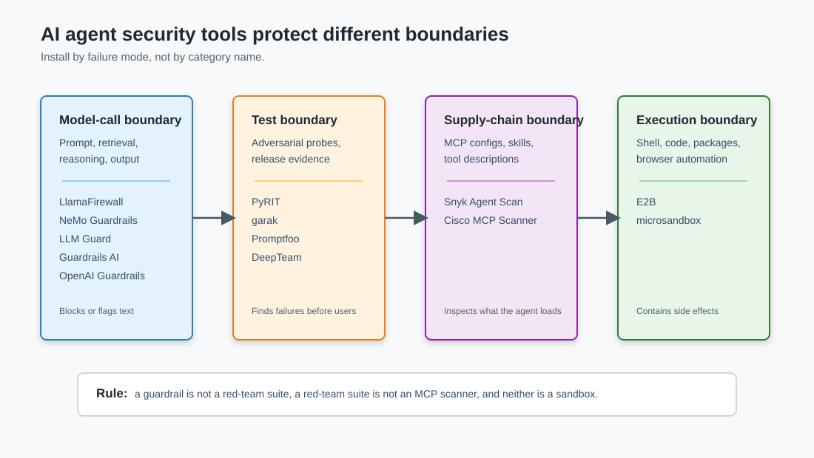

AI Agent Security Toolbox in Python: What Each Package Actually Covers
The Python AI security toolbox is crowded enough that "install a guardrail" stopped being useful advice. A prompt-injection classifier, an MCP scanner, a red-team runner, and a microVM sandbox all sit under the same security label, but they protect different parts of the system.
This post is a routing map. If you are building an agent that reads untrusted content, calls tools, writes files, or runs generated code, the question is not which package is best. The question is which boundary you are trying to protect.
TL;DR: Use runtime guardrails for model-call text and generated code, red-team tools for pre-release adversarial testing, MCP scanners for tool and skill supply-chain review, and sandboxes for code execution. Do not expect one library to cover all four. A minimal Python stack starts with one prompt-injection detector, one output/PII guard, one red-team runner in CI, one MCP/skill scanner, and a real sandbox for anything executable.
The four boundaries
The useful split is not open source versus commercial, or Python versus TypeScript. It is where the tool sits.

The first boundary is the model-call boundary: user prompt, retrieved text, system instructions, generated answer. Runtime guardrails live here. They catch prompt injection, jailbreaks, PII leakage, unsafe output, hallucination checks, and code snippets that match dangerous patterns.
The second boundary is the test boundary. Red-team tools generate attacks and score whether your app failed. They are not usually in the request path. They belong in CI, release gates, and recurring security reviews.
The third boundary is the agent supply chain: MCP server configs, tool descriptions, skills, local agent extensions, and hidden natural-language instructions in files the agent will trust. This is where MCP and skill scanners matter.
The fourth boundary is the execution boundary. If the agent can run code, shell commands, browser automation, package installs, or notebooks, no text classifier is enough. That work needs a sandbox.
That gives us the first rule: do not compare these tools as if they are interchangeable. garak and LlamaFirewall do different jobs. Snyk Agent Scan and E2B do different jobs. The overlap is smaller than the category names suggest.
Runtime guardrails
Runtime guardrails sit in or near the request path. They block or flag a prompt, retrieved document, reasoning trace, generated code block, or model output before the next step runs.
Meta LlamaFirewall
LlamaFirewall is the most agent-specific of the open-source guardrail stacks. Its docs describe a modular policy engine with several scanners:
- PromptGuard 2 for prompt-injection and jailbreak detection
- AlignmentCheck for auditing agent reasoning against the user goal
- CodeShield for static analysis of generated code
- Regex and custom scanners for org-specific checks
The interesting part is the shape. LlamaFirewall does not only ask "is this user prompt malicious?" It can scan untrusted web text before it enters context, inspect an agent's reasoning trace, and scan code before the harness executes or commits it.
PromptGuard 2 is also available directly as a model. Meta's Hugging Face model card lists 86M and 22M variants, a 512-token context window, and reported A100 latency of 92.4 ms for the 86M model and 19.3 ms for the 22M model at 512 tokens. The scope matters: it classifies explicit attempts to override prior instructions. For longer retrieved documents, you still need chunking and a policy for what happens when one chunk trips.
Use it when you need fast prompt-injection filtering and code-oriented checks around an agent loop. Do not treat it as a sandbox, authorization system, or proof that a tool call is safe.
NVIDIA NeMo Guardrails
NeMo Guardrails is an orchestration framework. It gives you input rails, output rails, fact-checking, hallucination detection, content safety, Presidio-based sensitive-data detection, LlamaGuard moderation, jailbreak detection, injection detection, tracing, and Colang for dialog flows.
The trade-off is that NeMo is more of a guardrail runtime than a single scanner. That is useful when you want policy as application logic: "if this input fails, refuse"; "if output contains sensitive data, rewrite"; "if the topic is outside scope, route differently." It is heavier than dropping one classifier into a FastAPI dependency.
One warning from the docs is worth keeping: the example self-check prompts are starting points, and production use needs evaluation and customization. Self-check rails depend on the model following the checking instruction. That is fine as one layer. It is not the layer I would trust alone for destructive tool calls.
LLM Guard
LLM Guard is the pragmatic scanner collection. The docs expose input scanners such as anonymization, code, invisible text, prompt injection, regex, secrets, token limits, and toxicity. Output scanners include bias, JSON, malicious URLs, factual consistency, relevance, sensitive data, toxicity, and URL reachability.
Two details make it practical for production services. First, it can run as a FastAPI/Uvicorn service. Second, it supports loading supported scanner models from local ONNX directories, which avoids downloading models every time a container starts. It also has fail-fast, cache, timeout, logging, metrics, and tracing knobs.
Use LLM Guard when your immediate problem is "I need a configurable input/output scanner service that my Python app can call." It is not a red-team suite and it will not inspect MCP tool composition unless you build that around it.
Guardrails AI
Guardrails AI validators are a validation framework. A validator checks whether a value passes some criterion and returns a pass or fail result. That shape is useful when your output contract matters: JSON shape, PII, provenance, formatting, business rules, allowed topics.
I like Guardrails AI most when the output needs to become data. If an agent writes a policy decision, compliance note, customer email, or structured extraction, validators give you a clear place to enforce constraints before anything downstream consumes the output.
The risk is composition drift. A pile of validators can look like coverage while leaving the dangerous action path untouched. Validators can reject bad text. They do not automatically constrain which tool the agent can call next.
OpenAI Guardrails Python
OpenAI Guardrails Python is a drop-in wrapper around the OpenAI Python client. It also integrates with the OpenAI Agents SDK through GuardrailAgent. The README lists built-in guardrails for moderation, URL filtering, PII, hallucination detection with vector stores, jailbreak detection, NSFW text, off-topic prompts, and custom prompt checks.
For an OpenAI-heavy Python stack, this is the shortest integration path:
from pathlib import Path
from guardrails import GuardrailsOpenAI, GuardrailTripwireTriggered
client = GuardrailsOpenAI(config=Path("guardrails_config.json"))
try:
response = client.responses.create(
model="gpt-5-mini",
input="Summarize this customer ticket without leaking secrets.",
)
except GuardrailTripwireTriggered as exc:
# Keep the blocked payload out of normal app logs.
raise RuntimeError("guardrail blocked the request") from exc
The clean part is that app code still looks like normal OpenAI client code. The thing to watch is cost and latency: the README is explicit that Guardrails calls paid OpenAI APIs. Every check you add has to be budgeted like any other model call.
Red-team runners
Runtime guardrails block traffic. Red-team tools attack your system before users do.
PyRIT
Microsoft PyRIT is an open-source framework for proactively identifying risks in generative AI systems. It is a good fit when your security team wants repeatable attack orchestration rather than a one-off notebook.
PyRIT is less about "scan this text" and more about building campaigns: targets, converters, scorers, memory, and orchestration. Use it when you need to test a real app behavior over multiple attempts, especially if you care about reproducibility and evidence.
garak
NVIDIA garak calls itself an LLM vulnerability scanner. It probes for hallucination, data leakage, prompt injection, misinformation, toxicity, jailbreaks, and other weaknesses. It supports OpenAI-compatible APIs, Hugging Face models, Bedrock, LiteLLM, REST-accessible systems, and more.
The mental model is closer to nmap than to a runtime guardrail. You point garak at a model or dialog system, pick probes if you want, and inspect what failed.
For a Python team, garak is the easiest way to add a broad "does this model/app fail obvious LLM-security probes?" job:
python -m pip install -U garak
python -m garak \
--target_type openai \
--target_name gpt-5-nano \
--probes promptinject
Use it as a regression test. If yesterday's harness passed a prompt-injection probe and today's harness fails it, you want to know before release.
Promptfoo
Promptfoo is Node-first, but it belongs in the toolbox because it is strong at application-level red teaming. The docs currently describe 50+ vulnerability types, dynamic attack probes, CI/CD integration, and targets that can be HTTP endpoints, browser flows, direct model access, custom Python, JavaScript, or executables.
Its MCP security testing guide is especially relevant for agents. It covers tool poisoning, side-channel exfiltration, authentication hijacking, rug pulls, tool shadowing, indirect prompt injection, cross-server attacks, and direct MCP testing.
Use Promptfoo when the target is not just a model but an app: a support agent endpoint, a RAG API, an MCP-connected assistant, or a browser workflow. It can sit in CI even if the rest of your stack is Python.
DeepTeam
DeepTeam is the Python-native red-team framework from Confident AI. Its README documents 50+ vulnerabilities, 20+ attack methods, agentic categories such as excessive agency and tool orchestration abuse, and framework mappings for OWASP, NIST, MITRE, and OWASP ASI 2026.
The basic shape is pleasant for Python apps because you wrap your system in a callback:
from deepteam import red_team
from deepteam.attacks.single_turn import PromptInjection
from deepteam.vulnerabilities import PIILeakage
async def model_callback(user_input: str) -> str:
result = await agent.run(user_input)
return result.final_output
risk = red_team(
model_callback=model_callback,
vulnerabilities=[PIILeakage()],
attacks=[PromptInjection()],
)
That callback shape is also the limitation. If your failure mode is "agent called the wrong tool with the wrong argument," make sure the callback exposes enough behavior for the evaluator to see it. A text-only final answer can hide the tool mistake.
MCP and skill scanners
Agent security has a supply-chain problem now. The agent may load MCP servers, skills, project instructions, rules files, or extension metadata before it ever talks to the model. Those artifacts contain natural language, code, tool schemas, and permissions.
Snyk Agent Scan
Snyk Agent Scan discovers and scans local agent components: harnesses, MCP servers, and skills. Its README says it scans for prompt injections, sensitive-data handling, malware payloads hidden in natural language, tool poisoning, tool shadowing, toxic flows, hardcoded secrets, and related issues. It currently documents 15+ distinct security risks across MCP servers and agent skills.
The most important warning is operational: scanning MCP configs may execute the commands defined in them, because the scanner needs to start stdio MCP servers to retrieve tool descriptions. Snyk prompts for consent by default and recommends Docker, a VM, or a disposable environment for untrusted configs.
That warning is the point. MCP scanning is not a harmless grep. Treat untrusted MCP configs like code.
Cisco MCP Scanner
Cisco's MCP Scanner announcement frames the same gap from the enterprise side. It focuses on MCP servers before they are integrated into AI systems, and the announcement names three scanning engines: Yara, LLM-as-judge, and Cisco AI Defense.
Cisco calls out tool poisoning, rug pulls, and over-privileged tool permissions. Those are not model-output problems. They are tool-supply-chain problems.
My default is to run an MCP/skill scanner before adding a server to a developer image, and again in CI when the repo defines agent skills or MCP configs. If the scanner needs to execute a server to inspect it, run the scanner inside a sandbox too.
Sandboxes
If your agent executes code, the security control is the runtime. Prompt filters are still useful, but they cannot prove what a Python package install, shell script, browser session, or generated notebook will do.
E2B
E2B exposes a Python SDK for secure isolated cloud sandboxes. A sandbox can run Linux commands, execute isolated code, manage files, use git, and optionally access the internet. The SDK exposes controls for environment variables, network options, lifecycle behavior, and timeouts. Current docs say the maximum sandbox lifetime is 24 hours for Pro users and 1 hour for Hobby users.
Use E2B when you want hosted sandboxes quickly: code interpreter, data analysis, browser automation, generated-code execution, or repo tasks where you do not want to operate your own VM pool.
microsandbox
microsandbox is a Rust microVM library aimed at AI agents and untrusted code. The docs describe real VMs with their own Linux kernel, OCI image support, sub-100 ms boot, network policies, DNS filtering, TLS interception, secrets that do not enter the VM, and named volumes.
Use microsandbox when you want local or self-hosted microVM isolation and are willing to own the infrastructure. The requirements are more concrete than a hosted API: Linux with KVM, or macOS with Apple Silicon, plus the Rust ecosystem.
The key design rule is the same for both: the model should not hold long-lived secrets, and the sandbox should get the smallest network and filesystem shape that can complete the task.
A minimal Python agent security stack
For a real Python agent, I would start smaller than the vendor diagrams suggest.
At runtime:
- PromptGuard 2 or LLM Guard on untrusted user/retrieved input.
- One output guard for PII, secrets, unsafe URLs, or schema correctness.
- A pre-tool policy hook in the harness. This is code, not a prompt.
- A sandbox for any shell, notebook, package install, browser, or generated-code path.
In CI:
- DeepTeam or garak for targeted regression attacks.
- Promptfoo if you need HTTP, browser, RAG, or MCP app-level red teaming.
- Snyk Agent Scan or Cisco MCP Scanner for MCP configs and skills.
That can look like this in a Python harness:
async def run_agent_turn(user_input: str) -> str:
if prompt_injection_guard(user_input).blocked:
return "I can't process that request."
plan = await planner.plan(user_input)
for call in plan.tool_calls:
decision = policy.authorize(
tool=call.name,
args=call.args,
user_id=current_user.id,
session_id=session.id,
)
if decision.requires_approval:
await approvals.request(decision)
return "Waiting for approval."
if not decision.allowed:
raise PermissionError(call.name)
result = await sandbox.run_tool(call)
await session_log.append(call=call, result=result)
output = await writer.compose(session_log=session_log)
return output_guard.filter(output)
The guardrail is only one line in that sketch. The policy decision, sandbox, and session log carry most of the risk.
What to pick
| Need | Start with | Why |
|---|---|---|
| Fast prompt-injection filter | Llama Prompt Guard 2 or LlamaFirewall | Small classifier path, agent-aware wrappers available |
| Configurable input/output scanner service | LLM Guard | FastAPI deployment, scanner config, ONNX model loading |
| OpenAI client guardrails | OpenAI Guardrails Python | Drop-in client wrapper and Agents SDK integration |
| Structured output validation | Guardrails AI | Validator model fits schema, PII, and business-rule checks |
| Broad model vulnerability scan | garak | CLI scanner with many probe families |
| Programmatic Python red teaming | DeepTeam | Python callback API and agentic vulnerability categories |
| App, RAG, browser, or MCP red teaming | Promptfoo | Strong target/provider coverage and MCP guide |
| MCP and skill supply-chain scanning | Snyk Agent Scan or Cisco MCP Scanner | Designed for tool metadata, skills, and MCP-specific risks |
| Hosted code execution sandbox | E2B | Python SDK and managed cloud isolation |
| Self-hosted microVM sandbox | microsandbox | OCI images, network policy, secrets, local VM isolation |
If you only remember one thing from this table, make it this: a runtime guardrail can reduce bad model inputs and outputs, but it does not authorize tools, isolate code, or inspect your agent supply chain. Those are separate controls.
Key Takeaways
- Do not buy or install "AI security" as one category. Pick tools by boundary: model call, test harness, MCP/skill supply chain, and execution runtime.
- Runtime guardrails are useful, but they mostly protect text and generated artifacts. Destructive actions need policy hooks and approvals in code.
- Red-team tools belong in CI and release review. They tell you whether your app fails under attack; they do not replace runtime checks.
- MCP configs and skills are executable supply-chain inputs. Scan them in a disposable environment, especially when the scanner needs to start servers.
- Any agent that executes code needs a sandbox. A prompt filter cannot contain a malicious package install or shell command.
References
- Meta LlamaFirewall architecture
- Llama Prompt Guard 2 model card
- NVIDIA NeMo Guardrails library
- LLM Guard API docs
- Guardrails AI validators
- OpenAI Guardrails Python
- Microsoft PyRIT
- NVIDIA garak
- Promptfoo red-team quickstart
- Promptfoo MCP security testing guide
- DeepTeam
- Snyk Agent Scan
- Snyk Toxic Flow Analysis
- Cisco MCP Scanner announcement
- E2B Python SDK docs
- microsandbox docs